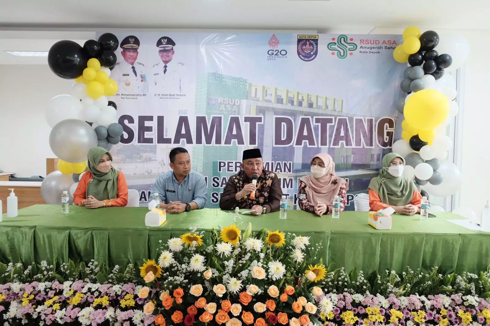
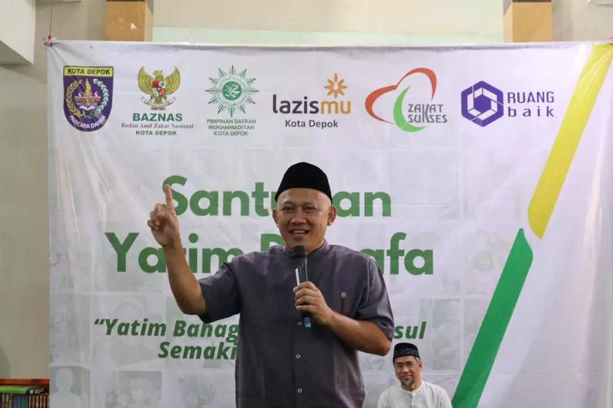
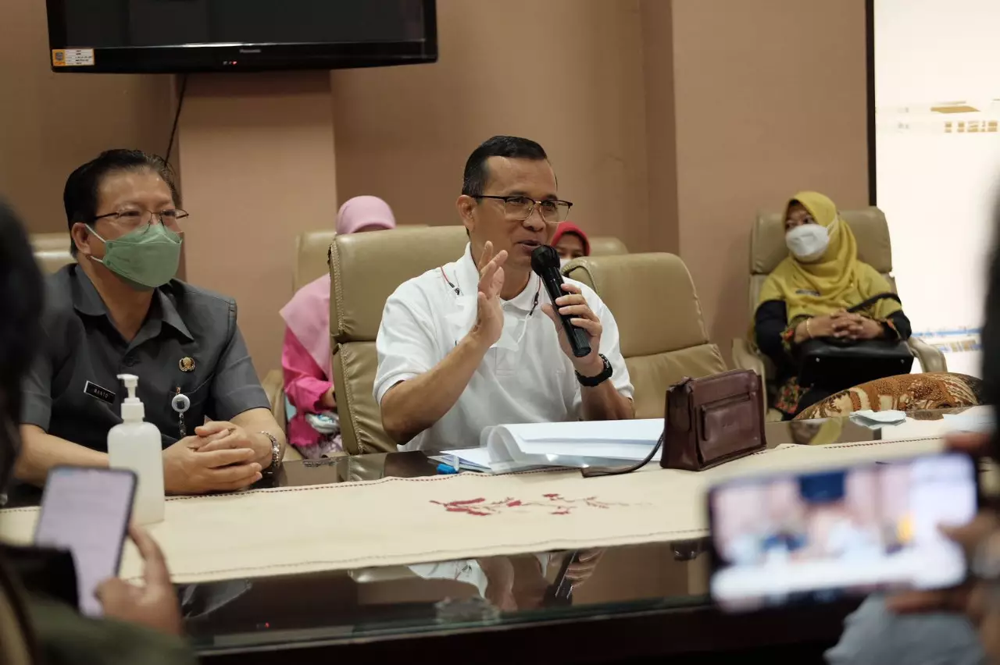
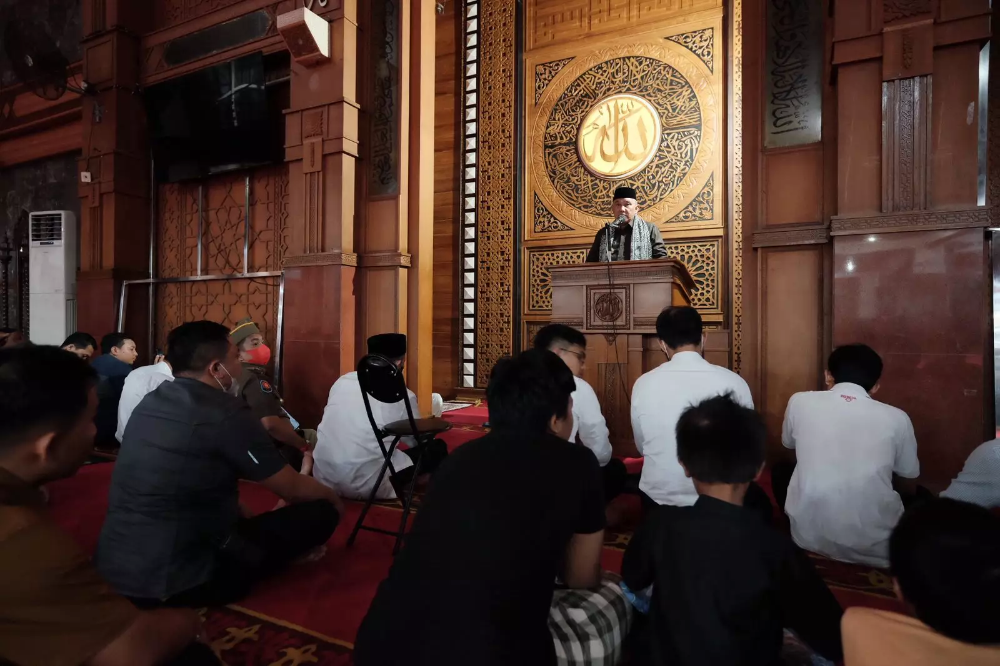
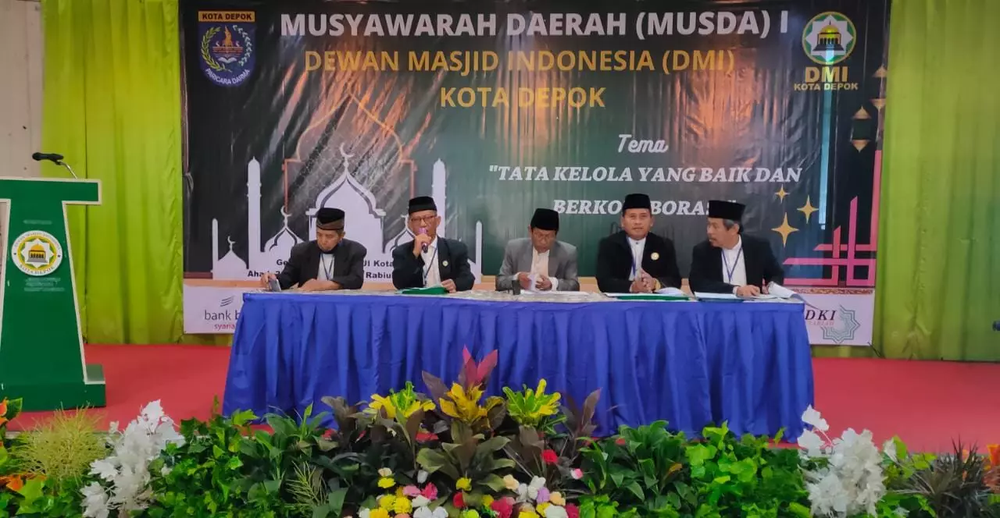
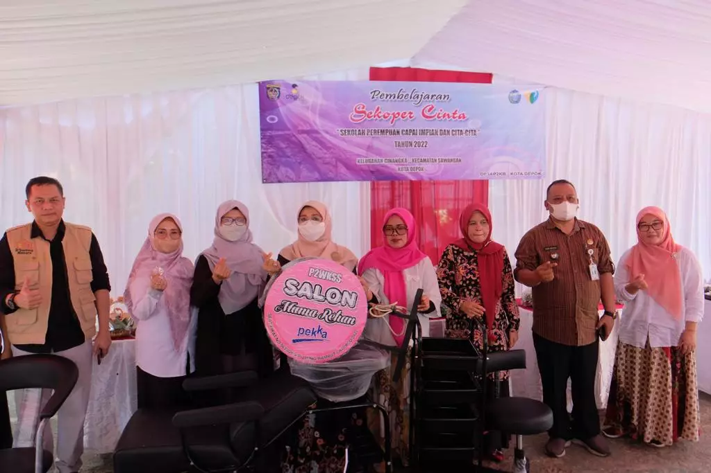

Wali Kota Depok, Mohammad Idris angkat
bicara mengenai rencana pembangunan Masjid Jami di lahan Sekolah Dasar
Negeri...

Ketua Badan Amil Zakat Nasional (Baznas)
Kota Depok, Endang Ahmad Yani menuturkan, masjid memiliki potensi
menjadi pusat ...

Kepala Dinas Perumahan dan Permukiman
(Disrumkim) Kota Depok, Dudi Mi'raz mengatakan, tahun depan, Pemerintah
Provisi
(Pemprov) ...

Wali Kota Depok, Mohammad Idris mengisi
Khutbah Salat Khusuf atau Salat Gerhana Bulan di Masjid Balai Kota
Depok, Selasa
(08/11/22) ...

Pelaksanaan Musyawarah Daerah (Musda) 1 Dewan
Masjid Indonesia (DMI) Kota Depok resmi digulirkan pada Minggu
(30/10).
Tujuan utama acara ini untuk memilih Ketua serta Pengurus Pimpinan
Daerah DMI Kota Depok masa bakti 2022-2027.

Dinas Pemberdayaan Perempuan dan Perlindungan
Anak Pengendalian Penduduk dan Keluarga Berencana (DP3AP2KB) Kota
Depok
mengadakan kegiatan penutupan Sekolah Perempuan Capai Impian dan
Cita-cita (Sekoper Cinta), sekaligus penyerahan bantuan
peralatan memasak kepada Perempuan Kepala Keluarga (PEKKA) di Masjid
Al Mujahidien, Kelurahan Cinangka, Kecamatan
Sawangan, Selasa (27/09/2022).